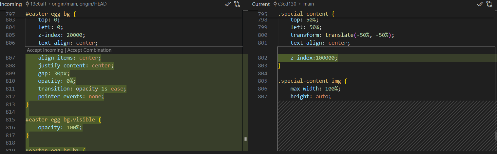
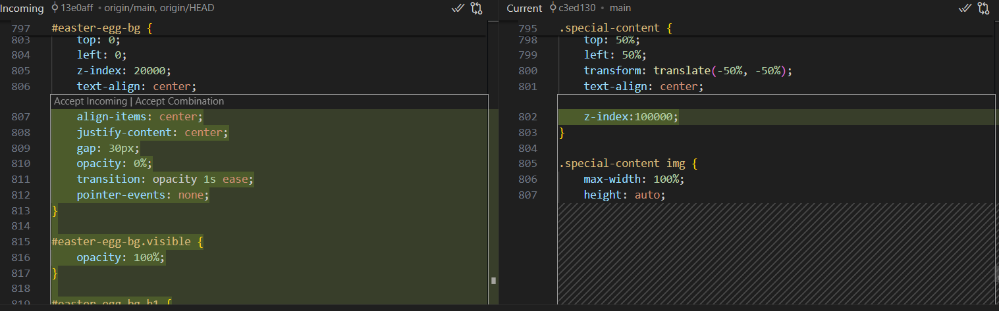
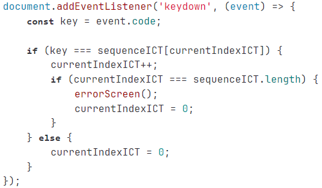
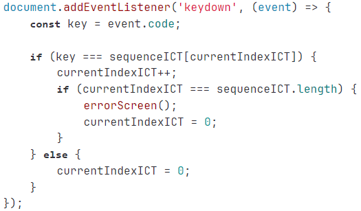

Wat heb ik gedaan
Voor het versiebeheer van ons development project heb ik GitLab gebruikt. Zo konden wij samen als groep aan de website werken. Tijdens het project heb ik regelmatig commits en synchronisaties uitgevoerd. Ook ben ik een merge conflict tegengekomen. In eerste instantie had ik deze verkeerd opgelost, maar na een aantal aanpassingen had ik mijn oude code weer terug.
Wat was mijn doel
Mijn doel was om samen te werken met mijn groep en versiebeheer te hebben van het bouwen van de website.
Wat heb ik geleerd
Ik heb geleerd hoe je versiebeheer gebruikt en hoe je merge conflicten kunt oplossen. Ik heb ook geleerd dat het handig is om samen in een repository te werken, omdat de code gelijk up-to-date is en je de voortgang kan zien.
Reflectie
Doordat ik het eerste deel van het semester niet met GitLab (versiebeheer) heb gewerkt kan ik niet mijn development opdrachten aantonen. Helaas heb ik dit niet op tijd opgepakt. In volgende semesters wil ik vanaf het begin gebruik maken van GitLab, zodat ik versiebeheer heb, mijn voortgang kan monitoren en altijd bij mijn projecten kan.
Bekijk op GitLab
 

 
